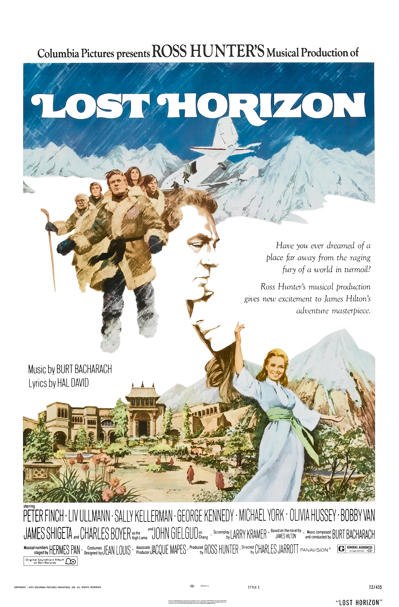

Lost Horizon
10th Academy Awards
(Oscars 1938)
7 Nominations, 2 Awards
| Nominations | ||
|---|---|---|
| Category | Nominees | Result |
| Outstanding Production | Columbia | Nominated |
| Actor in a Supporting Role | H. B. Warner | Nominated |
| Assistant Director | C. C. Coleman, Jr. | Nominated |
| Film Editing | Gene Havlick and Gene Milford | Won |
| Art Direction | Stephen Goosson | Won |
| Sound Recording | John Livadary | Nominated |
| Music (Scoring) | Dimitri Tiomkin and Morris Stoloff | Nominated |